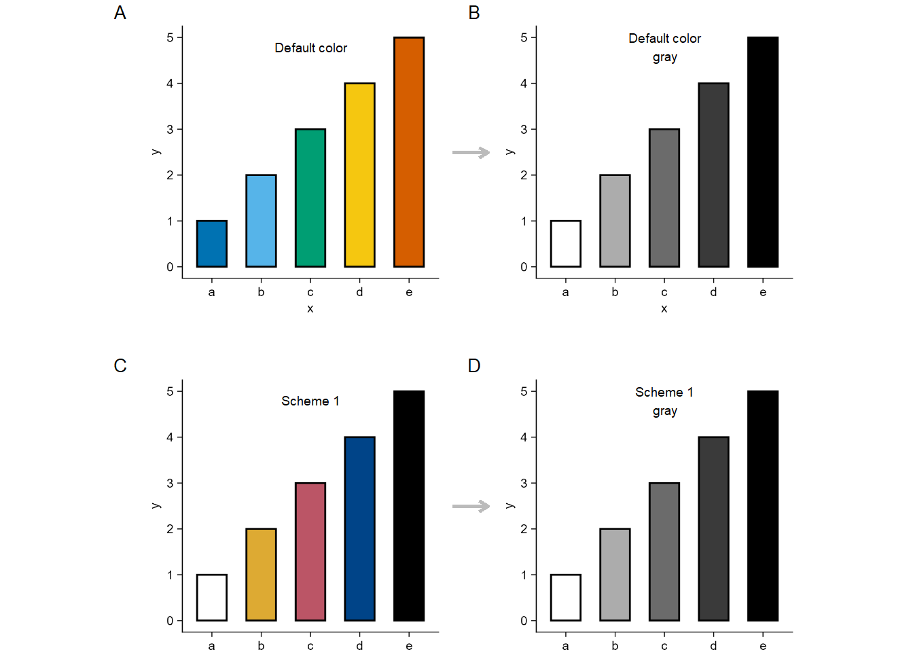

tidyplots |> library()
tibble |> library()
ggplot2 |> library()
magick |> library()
grid |> library()
df <- tibble::tibble(
y = c(1, 2, 3, 4, 5),
x = c("a", "b", "c", "d", "e")
)
df |> tidyplots::tidyplot(x = x, y = y, color = x) |>
add(ggplot2::geom_bar(stat = "identity", color = "#000000", width = 0.6, linewidth = 0.5)) |>
adjust_legend_position(position = "none") |>
save_plot("images/2026-03-30_1_default.png", padding = 0.01, view_plot = FALSE) |>
adjust_colors(new_colors = c(
"a" = "#ffffff",
"b" = "#ddaa33",
"c" = "#bb5566",
"d" = "#004488",
"e" = "#000000"
)) |>
save_plot("images/2026-03-30_scheme1.png", padding = 0.01, view_plot = FALSE)
default <- "images/2026-03-30_1_default.png" |>
magick::image_read()
# change to gray image and save
default_gray <- default |>
image_convert(colorspace = "gray") |>
image_write("images/2026-03-30_1_default_gray.png", format = "png")
scheme1 <- "images/2026-03-30_scheme1.png" |>
magick::image_read()
# change to gray image and save
scheme1_gray <- scheme1 |>
image_convert(colorspace = "gray") |>
image_write("images/2026-03-30_scheme1_gray.png", format = "png")
# put the four (i.e. default, default_gray, scheme1, and scheme1_gray) images together
df |> rm()
df <- tibble::tibble(
x = c(seq(1, 100)),
y = c(seq(1, 100))
)
default <- default |>
grid::rasterGrob(width = unit(1, "npc"), height = unit(1, "npc"))
default_gray |> rm()
default_gray <- "images/2026-03-30_1_default_gray.png" |>
magick::image_read() |>
grid::rasterGrob(width = unit(1, "npc"), height = unit(1, "npc"))
scheme1 <- scheme1 |>
grid::rasterGrob(width = unit(1, "npc"), height = unit(1, "npc"))
scheme1_gray |> rm()
scheme1_gray <- "images/2026-03-30_scheme1_gray.png" |>
magick::image_read() |>
grid::rasterGrob(width = unit(1, "npc"), height = unit(1, "npc"))
df |> tidyplots::tidyplot(x = x, y = y) |>
add_data_points(alpha = 0) |>
add(ggplot2::annotation_custom(default, xmin = 5, xmax = 50, ymin = 50, ymax = 95)) |>
add(ggplot2::annotation_custom(default_gray, xmin = 55, xmax = 100, ymin = 50, ymax = 95)) |>
add(ggplot2::annotation_custom(scheme1, xmin = 5, xmax = 50, ymin =0, ymax = 45)) |>
add(ggplot2::annotation_custom(scheme1_gray, xmin = 55, xmax = 100, ymin =0, ymax = 45)) |>
add_annotation_text("A", x = 3, y = 95, fontsize = 10, face = "bold") |>
add_annotation_text("B", x = 53, y = 95, fontsize = 10, face = "bold") |>
add_annotation_text("C", x = 3, y = 45, fontsize = 10, face = "bold") |>
add_annotation_text("D", x = 53, y = 45, fontsize = 10, face = "bold") |>
add_annotation_text("Default color", x = 30, y = 90) |>
add_annotation_text(paste("Default color", "gray", sep = "\n"), x = 80, y = 90) |>
add_annotation_text("Scheme 1", x = 30, y = 40) |>
add_annotation_text(paste("Scheme 1", "gray", sep = "\n"), x = 80, y = 40) |>
add(ggplot2::geom_segment(aes(x = 50, y = 75, xend = 55, yend = 75), arrow = arrow(length = unit(0.2, "cm")), color = "#bbbbbb", linewidth = 1)) |>
add(ggplot2::geom_segment(aes(x = 50, y = 25, xend = 55, yend = 25), arrow = arrow(length = unit(0.2, "cm")), color = "#bbbbbb", linewidth = 1)) |>
adjust_size(width = 150, height = 150) |>
remove_x_axis() |>
remove_y_axis() |>
save_plot("images/2026-03-31_scheme1.png", padding = 0, view_plot = TRUE)